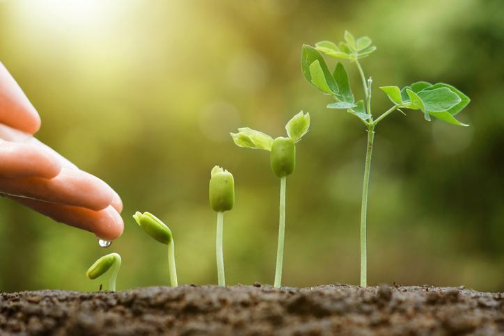
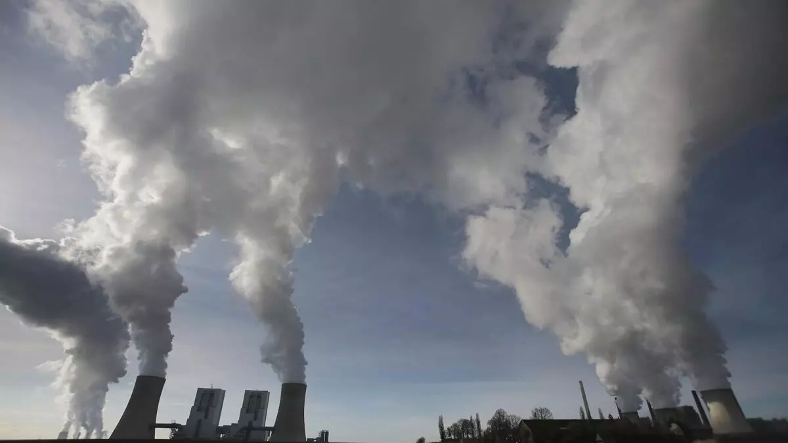
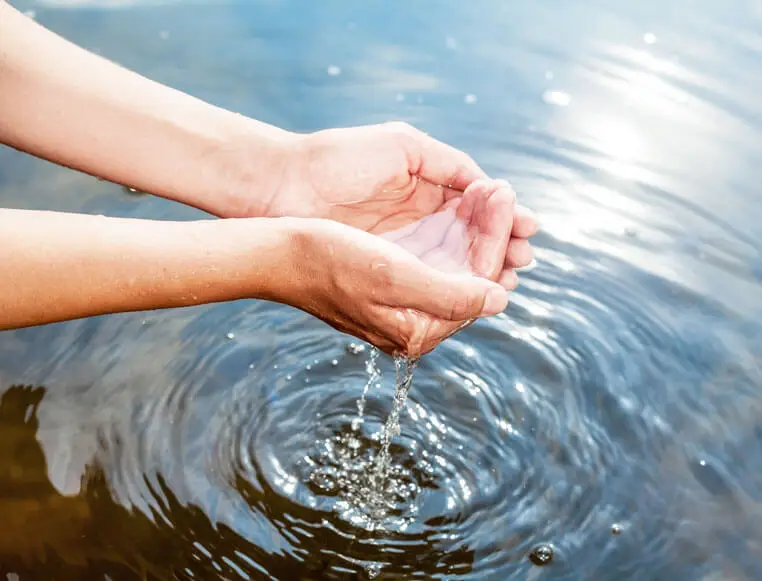
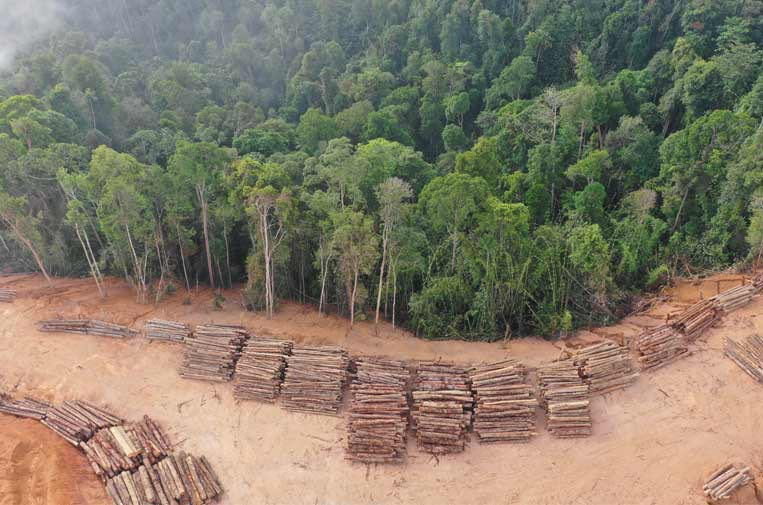
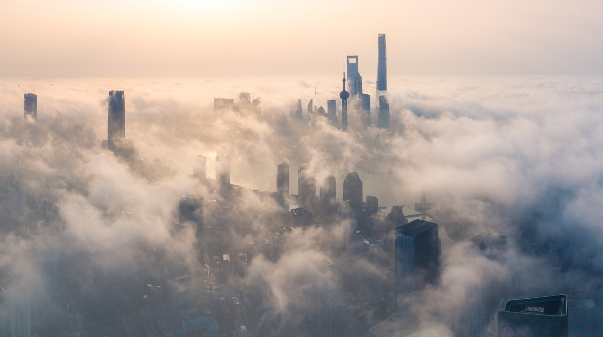
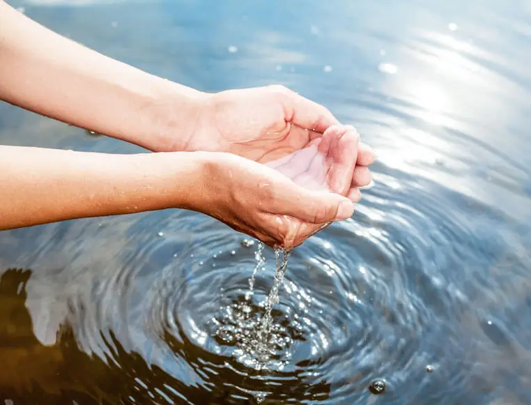
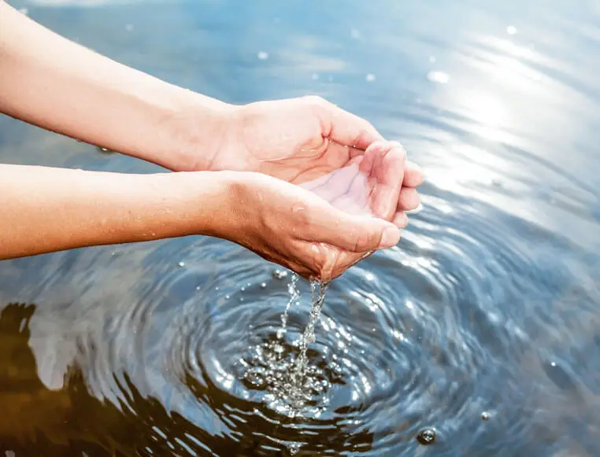

La contaminación del suelo es una degradación de la calidad del suelo asociada a la presencia de sustancias químicas.
Imágenes:



Contaminación del agua:
La contaminación hídrica o la contaminación del agua es una modificación de esta, que la vuelve impropia o peligrosa para el consumo, la industria, la agricultura, la pesca y las actividades, así como para los animales.
¡Héchale un vistazo a las publicaciones!
¡Ven y comparte tus experiencias uaidando al medio ambiente, sube tus propias imágenes y comenta tus experiencias utilizando PlanetWise!.
Deforestación...¿Me afecta?
La deforestación o desforestación es un proceso provocado por la acción de los humanos, en el que se destruye o agota la superficie forestal, generalmente con el objetivo de destinar el suelo a otra actividad.

Reducción de residuos

¿Qué es la Reducción de residuos?
Se refiere a la implementación de acciones y estrategias para minimizar la cantidad de residuos generados en primer lugar. El objetivo es evitar la producción innecesaria de desechos y fomentar un enfoque más consciente y sostenible hacia el consumo y la gestión de materiales.
Desglose del tema
El tema de la reducción de residuos implica una serie de enfoques y estrategias para minimizar la cantidad de residuos generados y promover un consumo más sostenible. A continuación se presenta un desglose detallado de los aspectos clave de la reducción de residuos:
1- Conciencia y educación:
Sensibilización pública: Promover la conciencia sobre los impactos negativos de la generación excesiva de residuos y la importancia de reducirlos.
Educación: Informar a las personas sobre prácticas de consumo responsable, técnicas de reducción de residuos y opciones de reutilización y reciclaje.
2- Planificación y diseño de productos:
Diseño sostenible: Considerar los aspectos ambientales en todas las etapas del ciclo de vida de un producto, incluido su diseño, fabricación, uso y disposición final. Esto implica la reducción de materiales, el uso de materiales reciclables o biodegradables y la eliminación de sustancias tóxicas.
Envasado sostenible: Fomentar el uso de envases minimalistas y ecoamigables, y promover la reutilización y el reciclaje de envases.
3- Reducción en origen:
Consumo consciente: Fomentar una mentalidad de "comprar menos" y evitar adquirir productos innecesarios.
Productos duraderos: Priorizar la compra de productos de calidad y duraderos en lugar de productos desechables o de baja calidad.
Compras a granel: Optar por comprar alimentos y productos a granel para reducir los envases y embalajes innecesarios.
4- Reutilización:
Reparación: Fomentar la reparación de objetos y electrodomésticos en lugar de desecharlos y reemplazarlos.
Donación y reventa: Promover la donación y reventa de ropa, muebles y otros artículos usados en lugar de desecharlos.
Compartir: Fomentar el intercambio y el préstamo de herramientas, equipos y otros productos entre vecinos y comunidades.
5- Reciclaje:
Separación de residuos: Establecer sistemas de clasificación y separación de residuos para facilitar el reciclaje.
Programas de reciclaje: Promover la participación en programas de reciclaje locales y nacionales y garantizar la disponibilidad de infraestructuras de reciclaje adecuadas.
6- Compostaje:
Compostaje de residuos orgánicos: Fomentar la compostaje de desechos de alimentos y jardín para producir fertilizantes naturales y reducir la cantidad de residuos enviados a los vertederos.
7- Legislación y políticas:
Regulaciones y estándares: Establecer normativas que fomenten la reducción de residuos, como la prohibición de ciertos materiales de un solo uso o la promoción de prácticas de diseño sostenible.
Incentivos y programas de apoyo: Implementar incentivos económicos y programas de apoyo para fomentar la adopción de prácticas de reducción de residuos por parte de las empresas y los consumidores.
8- Colaboración y participación comunitaria:
Asociaciones público-privadas: Fomentar la colaboración entre gobiernos, empresas, organizaciones sin fines de lucro y la sociedad civil para abordar conjuntamente el desafío de la reducción de residuos.
Participación ciudadana: Involucrar a la comunidad en la toma de decisiones y en la implementación de acciones de reducción de residuos.
Curiosidades sobre la Reducción de residuos
Se estima que aproximadamente un tercio de todos los alimentos producidos a nivel mundial se desperdicia. La reducción de desperdicio de alimentos es una de las formas más efectivas de reducir los residuos y el impacto ambiental asociado con la producción de alimentos.
El upcycling es una forma creativa de reducir residuos mediante la transformación de materiales desechados en productos de mayor valor o utilidad. Por ejemplo, convertir neumáticos viejos en muebles o hacer joyas a partir de objetos reciclados.
El reciclaje de una tonelada de papel puede salvar alrededor de 17 árboles, 7,000 galones de agua, 380 galones de petróleo y evitar la emisión de 2.5 toneladas de dióxido de carbono. Reciclar papel es una forma sencilla pero poderosa de reducir la deforestación y el consumo de recursos naturales.


 
